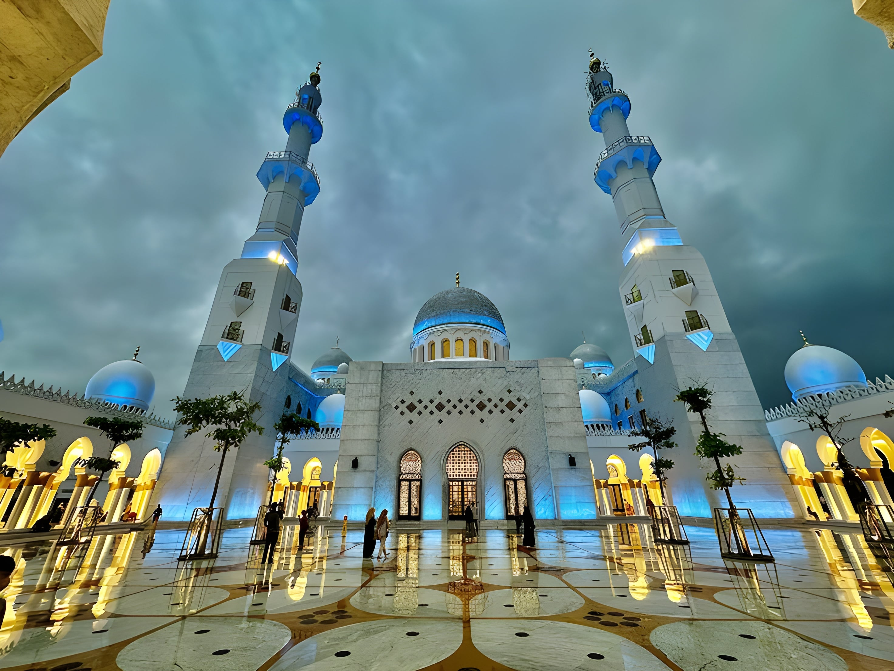
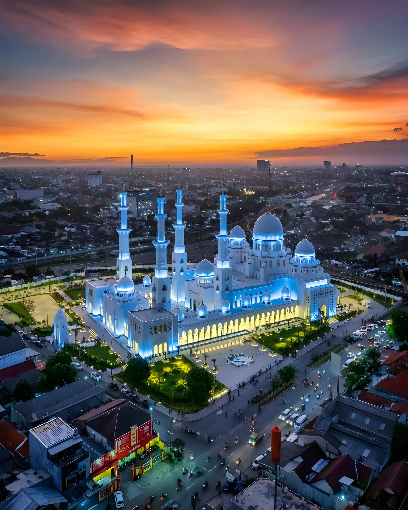
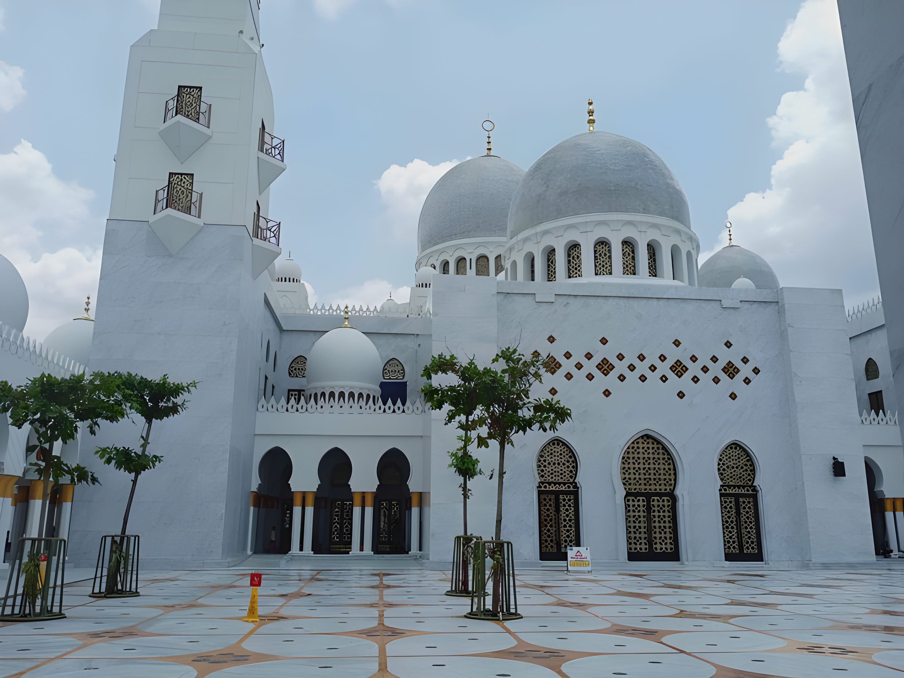
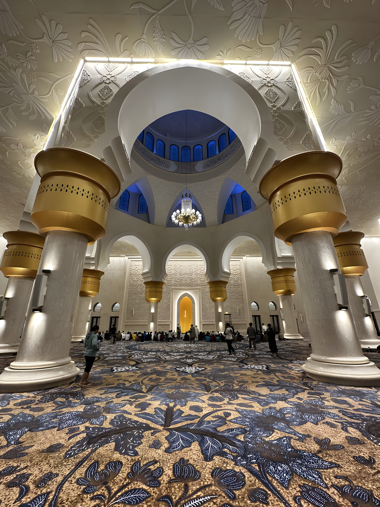
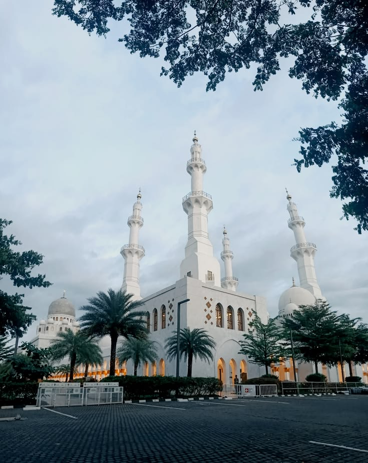

1 / 5

بِسْمِ اللَّهِ الرَّحْمَٰنِ الرَّحِيمِ
Simbol keharmonisan bilateral Indonesia dan Uni Emirat Arab, pusat dakwah Islam yang moderat, serta destinasi wisata religi termegah di Kota Solo.

82 kubah bergaya Timur Tengah dan 4 menara setinggi 75 meter menjulang mewarnai cakrawala Kota Solo, bersinar memukau saat senja temaram.

Dibangun dari marmer murni berkualitas tinggi Italia sebagai replika Sheikh Zayed Grand Mosque Abu Dhabi, hadiah istimewa penuh cinta untuk bangsa Indonesia.

Karpet tenun lembut bermotif Batik khas Surakarta dan pilar-pilar berhias ukiran kaligrafi emas 24 karat menyambut hingga 10.000+ jamaah dengan ketenteraman.
Kapasitas Jamaah
Ruang utama & pelataran sahn
Gaya Timur Tengah
Marmer putih murni Italia
Menjulang 75 Meter
Landmark megah Surakarta
Kawasan Terpadu
Masjid & Islamic Center Solo
Masjid Raya Sheikh Zayed Surakarta merupakan miniatur autentik dari Sheikh Zayed Grand Mosque di Abu Dhabi, Uni Emirat Arab (UEA), yang dihibahkan sebagai simbol persaudaraan abadi antar bangsa.
مَنْ بَنَى مَسْجِدًا لِلَّهِ بَنَى اللَّهُ لَهُ فِي الْجَنَّةِ مِثْلَهُ
"Barangsiapa membangun masjid karena Allah, niscaya Allah akan membangunkan untuknya rumah yang serupa di surga." (HR. Bukhari no. 450 & Muslim no. 533)
Dibangun atas inisiatif persahabatan antara Presiden Republik Indonesia Joko Widodo dan Presiden UEA Sheikh Mohamed bin Zayed Al Nahyan (MBZ).
Dilengkapi gedung Islamic Center megah untuk pendidikan Al-Qur'an, kajian internasional, perpustakaan digital, serta penguatan Islam Rahmatan Lil 'Alamin.
Menjadi episentrum wisata religi di Jawa Tengah yang menyambut jutaan wisatawan domestik maupun mancanegara setiap tahunnya.

Oleh Presiden Joko Widodo & Presiden Sheikh Mohamed bin Zayed Al Nahyan
Memadukan kemegahan arsitektur khas Uni Emirat Arab dengan kearifan lokal Nusantara, terpatri indah pada ornamen kaligrafi dan karpet Batik khas Surakarta.
Kubah utama dilapisi marmer putih berkilau yang memantulkan sinar matahari di siang hari dan diterangi pencahayaan LED spektakuler pada malam hari.
Karpet ruang sholat utama ditenun khusus dengan motif Batik Kawung dan Parang, lambang kesucian, keadilan, dan keteguhan spiritual masyarakat Jawa.
Menggunakan marmer impor pilihan dari Italia dan ukiran kaligrafi Asmaul Husna yang dikerjakan oleh para seniman kaligrafi ahli berpengalaman.
Klik salah satu fasilitas di bawah ini untuk melihat detail foto, kapasitas, dan spesifikasi kemegahan masjid.
Lantai marmer Italia berlapis karpet tebal bermotif Batik khas Surakarta. Dinding mihrab dihiasi kaligrafi Asmaul Husna berlapis emas 24 karat yang memancarkan ketenteraman spiritual saat beribadah.
Arah kiblat dari Masjid Raya Sheikh Zayed Solo mengarah ke 294.5° (Barat-Barat Laut) dengan jarak lurus sejauh ± 8.398 kilometer menuju Ka'bah di Masjidil Haram, Makkah Al-Mukarramah.
Demi menjaga kesucian tempat ibadah dan kenyamanan bersama bagi jamaah maupun wisatawan religi.
Wanita wajib mengenakan jilbab/kerudung dan busana tertutup tidak ketat. Pria wajib memakai celana panjang rapi.
Lepas alas kaki sebelum menginjak batas suci pelataran dan ruang sholat. Tersedia rak penitipan sepatu/sandal gratis.
Dilarang berfoto dengan pose berlebihan atau mengganggu kekhusyukan jamaah yang sedang sholat dan berdoa.
Kawasan bebas asap rokok. Dilarang membawa makanan dan minuman berat ke dalam ruang utama ibadah.
Salurkan zakat, infaq, dan sedekah terbaik Anda untuk kemaslahatan umat, operasional masjid, serta beasiswa anak yatim.
Scan via BCA, Mandiri, BRI, BSI, GoPay, OVO, ShopeePay & DANA.
Terletak strategis di pusat Kota Surakarta dengan kemudahan akses transportasi kereta api, bus antarkota, dan Batik Solo Trans.
Jl. Cirebon No.12, Gilingan, Kec. Banjarsari, Kota Surakarta, Jawa Tengah 57134
Buka Setiap Hari: 03.00 WIB s/d 21.00 WIB
Gerbang dibuka mulai jam 03.00 WIB untuk persiapan Sholat Tahajud dan Subuh berjamaah.
Ikuti berbagai kegiatan keagamaan, sosial, dan kajian Islam moderat yang terbuka bebas bagi jamaah umum.
Mendalami mukjizat Al-Qur'an bersama Guru Besar dan Ulama terkemuka setiap hari Selasa malam.
Program santri cilik belajar tahsin qiroati dan menghafal juz amma bersanad di Islamic Center.
Distribusi makanan bernutrisi dan santunan kepada dhuafa, musafir, serta jamaah sholat Jumat.
Uji wawasan Anda seputar kemegahan dan sejarah Masjid Sheikh Zayed Solo!
1. Berapa jumlah kubah bergaya Timur Tengah di Masjid Raya Sheikh Zayed Surakarta?
2. Masjid Raya Sheikh Zayed Solo merupakan miniatur dari masjid agung di negara mana?
3. Motif kearifan lokal apa yang menghiasi karpet lembut di ruang sholat utama?
Potret kemegahan interior, marmer putih, menara menjulang, serta pendar senja di Kota Solo.
Sentuh untuk memperbesar & mengunduh foto
Sentuh untuk memperbesar & mengunduh foto
Sentuh untuk memperbesar & mengunduh foto
Sentuh untuk memperbesar & mengunduh foto
Sentuh untuk memperbesar & mengunduh foto
Sampaikan pertanyaan mengenai kunjungan rombongan bus, peminjaman kursi roda difabel, reservasi akad nikah, atau masukan untuk pengurus masjid.
+62 811-2902-666 (Senin - Ahad 08.00 - 17.00 WIB)
sekretariat@masjidzayedsolo.or.id